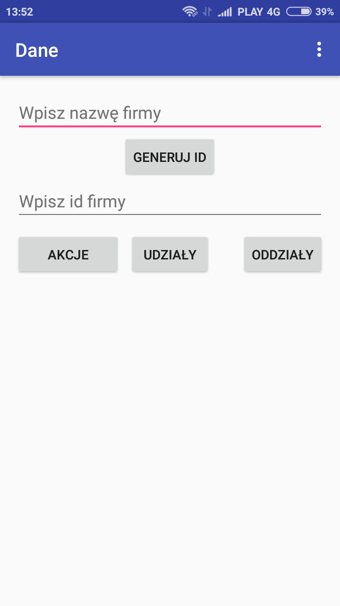
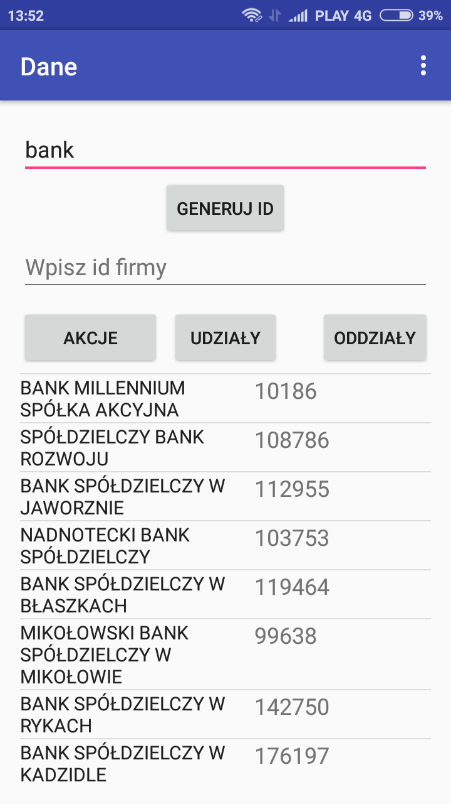
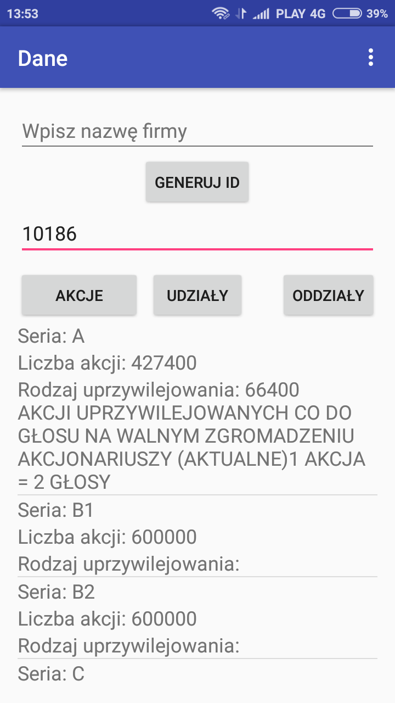
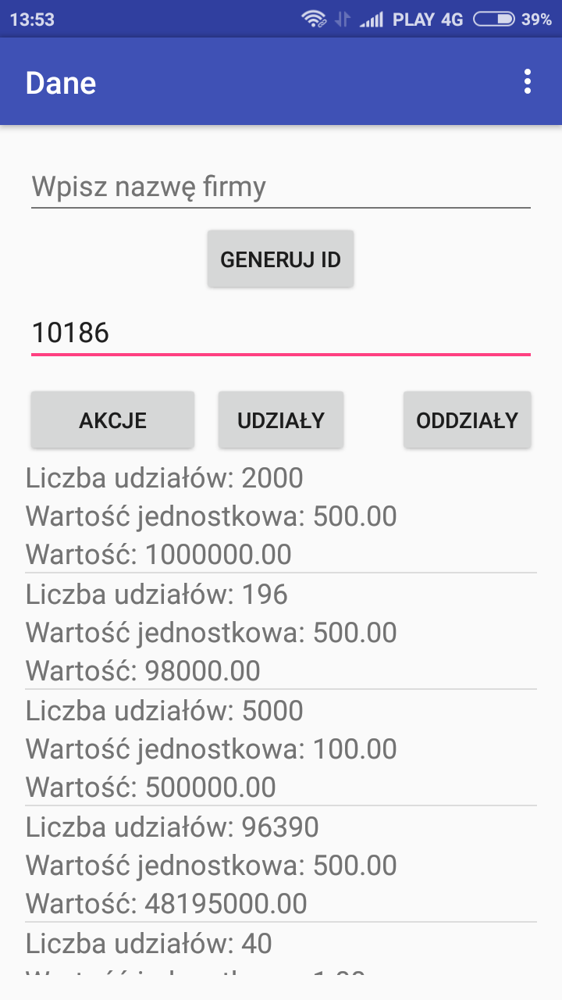
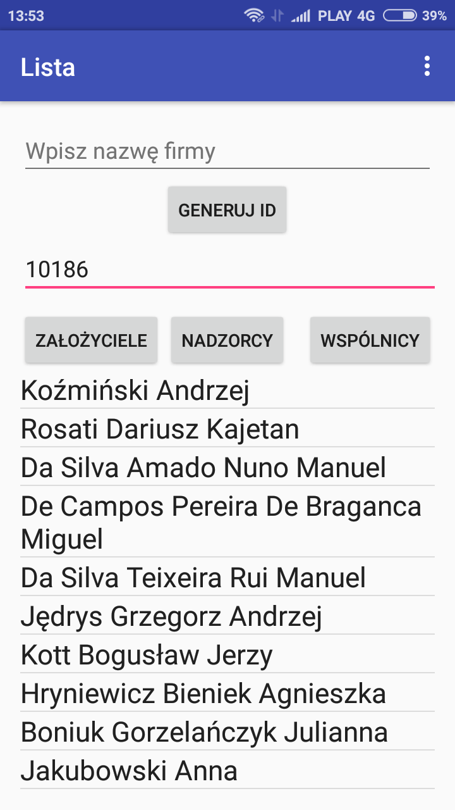
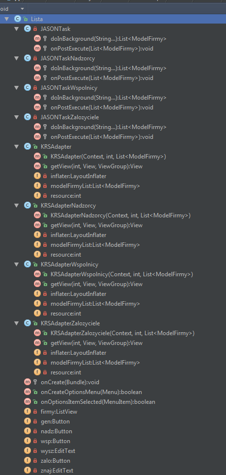
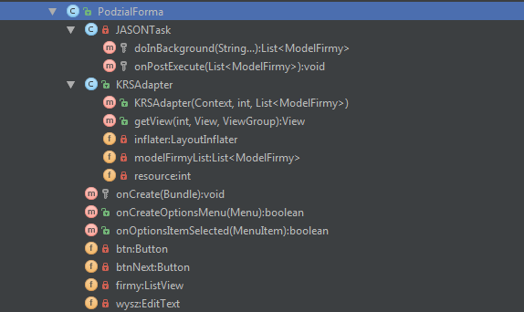
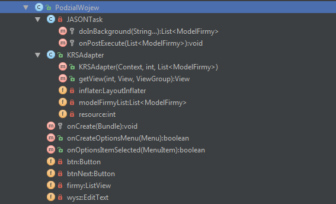

Dokumentacja aplikacji KRS 2.0
1. Podstawowe założenia Krajowego Rejestru Sądowego
Podstawowym założeniem KRS-u jest wzmocnienie pewności obrotu poprzez stworzenie jednolitego, centralnego rejestru, który wywołuje określone skutki prawne zarówno dla przedsiębiorców jak i uczestników obrotu.
Z perspektywy władz państwowych KRS jest filtrem, który ma przynajmniej z założenia, nie dopuścić do działania nieuczciwych przedsiębiorców czy zakładania fikcyjnych spółek. Ponadto sprzyja rozwojowi gospodarczemu zapewniając przejrzystość informacji dotyczących podmiotów biorących udział w obrocie gospodarczym i równe warunki dostępu do rejestru.
Jeżeli chodzi o przedsiębiorców to poprzez wpis do rejestru zyskują swój statut, a dane dotyczące ich spółki są dostępne publicznie. Pojawienie się podmiotu w wyszukiwarce KRS świadczy o tym, że spełnił określone prawem wymagania i jesteśmy w stanie sprawdzić, między innymi: jego NIP, REGON (jeżeli wcześniej ich nie posiadaliśmy), dokładny adres, datę wpisu do KRS, organy reprezentacji, przedmiot działalności. Ponadto możemy sprawdzić informację w dziale 4 na temat zaległości i wierzytelności tego podmiotu i zweryfikować czy chcemy współpracować z danym przedsiębiorcą, bądź podjąć u niego zatrudnienie.
Informacje dodatkowe, których nie sprawdzimy w KRS, a które mogą okazać się przydatne przy weryfikacji danego podmiotu są dostępne na stronie: http://przeswietl.pl Możemy tam sprawdzić m.in wszystkie firmy znajdujące się pod danym adresem, powiązania jakie ma dana firma, czy historię jej działalności.
Główne zasady KRS
Zgodnie z teorią profesora Kidyby można wyróżnić pięć zasad w oparciu, o które funkcjonuje KRS :
1. Jawność – dzięki tej zasadzie każdy ma prawo dostępu do danych zawartych w rejestrze za pośrednictwem Centralnej Informacji oraz ma prawo otrzymywać drogą elektroniczną poświadczone odpisy, wyciągi, zaświadczenia i informacje z Rejestru.
2. Domniemanie znajomości treści wpisu – ta zasada wiąże się z zasadą jawności. Oznacza, że od dnia ogłoszenia wpisu w Monitorze Sądowym nie mogę zasłaniać się nieznajomością ogłoszonych wpisów.
3. Domniemanie prawdziwości i zasady dobrej wiary – jest to dość prosta i logiczna zasada, która pozwala mi zakładać, że dane które znajduję w rejestrze są prawdziwe.
4. Każdy podmiot zarejestrowany w KRS otrzymuje swój unikatowy numer ( za wyjątkiem wpisu do rejestru dłużników niewypłacalnych).
(Joanna Kosterska - Absolwentka prawa Uniwersytetu Wrocławskiego)
KRS służy także jako skuteczne narzędzie windykacyjne. W szczególności dzięki informacjom zawartym w KRS możemy ustalić, czy określona osoba jest wspólnikiem spółki, jej akcjonariuszem lub wchodzi w skład organów takiego podmiotu. Dane te stanowią cenne źródło informacji dla wierzyciela. Ponadto w przypadku, gdy dłużnik nie ma majątku lub go skutecznie ukrywa, istnieje możliwość wpisania takiego dłużnika do rejestru dłużników niewypłacalnych co także ma silne oddziaływanie na takiego dłużnika.
(Jarosław Olejarz SerwisPrawa.pl)
2. Opis aplikacji
KRS 2.0 jest aplikacją umożliwiająca wyświetlanie szczegółowych danych dotyczących organizacji zarejestrowanych w Krajowym Rejestrze Sądowym przedstawionych poniżej.
- Wyświetlanie organizacji zarejestrowanych w KRS (z podziałem na województwa)
- Wyświetlanie informacji o organizacji (NIP, KRS, adres, nazwę, itp.)
- Podział na typ formy prawnej (organizacja biznesowa, pozarządowa, samodzielne publiczne zakłady opieki zdrowotnej)
- Wyświetlanie listy założycieli organizacji
- Wyświetlanie listy osób pełniących nadzór nad organizacją
- Wyświetlanie listy wspólników firmy
- Monitorowanie emisji akcji organizacji
- Wyświetlanie listy firm, w których organizacja ma udziały
- Wyświetlanie listy oddziałów firmy
3. Działanie i obsługa aplikacji
Po uruchomieniu aplikacji oczom użytkownika ukazuje się ekran startowy na którym znajduje się sześć przycisków kryjących główne opcje programu.

Opcja "WYSZUKIWARKA" pozwala na odnajdywania firm za pomocą ich nazwy lub numeru KRS


Opcja "AKCJE I UDZIAŁY" pozwala na pozyskanie informacji dotyczący ch AKCJI UDZIAŁÓW oraz ODZDZIAŁÓW wyszukiwanego przedsiębiorstwa.

Aby wyświetlić żądane informacje należy wyszukać numer ID interesującego nas przedsiębiorstwa poprzez wpisanie jego nazwy i kliknięcie przycisku "GENERUJ ID" a następnie przepisanie wyświetlonego numeru ID we wskazane pole.

Opcja "Wspólnicy i nadzorcy" jest rozszeżeniem opcji "AKCJE I UDZIAŁY" więc pozyskanie żądanych informacji odbywa się w sposób analogiczny.

Opcja "PODZIAŁ FORMA PRAWNA" wyświetla przedsiębiorstwa o danym typie formy prawnej, w podziale na:
1 - Organizacje biznesowe
2 - Organizacje pozarządowe
3 - Samodzielne publiczne zakłady opieki zdrowotnej


Opcja "PODZIAŁ NA WOJEWÓDZTWA" pozwala na wyciągnięcie informacji dotyczącej firm zarejestrowanych w danym województwie.

Jeżeli użytkownik aplikacji wprowadzi nieodpowiedni format/frazę/parametr zostanie o tym poinformowany komunikatem.

Ostatnia opcja aplikacji przedstawia informacje o autorach projektu.

4. Opis klas
4.1 Klasa MainActivity

Klasa ta zawiera następujące metody:
• void akcje(View) - przekierowywuje do klasy Dane
• void autorzy(View) - przekierowywuje do klasy Autorzy
• void ludzie(View) - przekierowywuje do klasy Lista
• void podzialF(View) - przekierowywuje do klasy PodzialForma
• void podzialW(View) - przekierowywuje do klasy PodzialWojew
• void wysz(View) - przekierowywuje do klasy Wyszukiwarka
• void onCreate(Bundle)
• boolean onCreateOptionsMenu(Menu)
• boolean onOptionsItemSelected(MenuItem)
4.2 Klasa Autorzy

Klasa ta zawiera następujące metody:
• void onCreate(Bundle)
• boolean onCreateOptionsMenu(Menu)
• boolean onOptionsItemSelected(MenuItem)
4.3 Klasa Dane

Klasa ta zawiera następujące metody:
• void onCreate(Bundle)
• boolean onCreateOptionsMenu(Menu)
• boolean onOptionsItemSelected(MenuItem)
Oraz pola:
• Button btn - przycisk służący do wyświetlenia akcji firmy
• Button oddzialy - przycisk służący do wyświetlenia oddziałów firmy
• Button udzialy - przycisk służący do wyświetlenia udziałów firmy
• Button gen - przycisk służący do wyświetlenia ID firmy
• EditText wysz - pole pobierające tekst od użytkownika
• EditText znaj - pole pobierające tekst od użytkownika
• ListView firmy - lista firm
Klasa zawiera następujące podklasy:
• JSONTask - odpowiada za pobieranie ID firmy
• JSONTaskAkcje - odpowiada za pobieranie akcji firmy
• JSONTaskOddzialy - odpowiada za pobieranie oddziałów firmy
• JSONTaskUdzialy - odpowiada za pobieranie udziałów firmy
• KRSAdapter - odpowiada za wyświetlenie ID firmy
• KRSAdapterAkcje - odpowiada za wyświetlenie akcji firmy
• KRSAdapterOddzialy - odpowiada za wyświetlenie oddziałów firmy
• KRSAdapterUdzialy - odpowiada za wyświetlenie udziałów firmy
4.4 Klasa Lista

Klasa ta zawiera następujące metody:
• void onCreate(Bundle)
• boolean onCreateOptionsMenu(Menu)
• boolean onOptionsItemSelected(MenuItem)
Oraz pola:
• Button zalo - przycisk służący do wyświetlenia zalozycieli firmy
• Button nadz - przycisk służący do wyświetlenia nadzorców firmy
• Button wsp - przycisk służący do wyświetlenia wspólników firmy
• Button gen - przycisk służący do wyświetlenia ID firmy
• EditText wysz - pole pobierające tekst od użytkownika
• EditText znaj - pole pobierające tekst od użytkownika
• ListView firmy - lista firm
Klasa zawiera następujące podklasy:
• JSONTask - odpowiada za pobieranie ID firmy
• JSONTaskZalozyciele - odpowiada za pobieranie nazwisk założycieli firmy
• JSONTaskNadzorcy - odpowiada za pobieranie nazwisk nadzorców firmy
• JSONTaskWspolnicy - odpowiada za pobieranie nazwisk wspólników firmy
• KRSAdapter - odpowiada za wyświetlenie ID firmy
• KRSAdapterZalozyciele - odpowiada za wyświetlenie nazwisk założycieli firmy
• KRSAdapterNadzorcy - odpowiada za wyświetlenie nazwisk nadzorców firmy
• KRSAdapterWspolnicy - odpowiada za wyświetlenie nazwisk wspólników firmy
4.5 Klasa PodzialForma

Klasa ta zawiera następujące metody:
Klasa ta zawiera następujące metody:
• void onCreate(Bundle)
• boolean onCreateOptionsMenu(Menu)
• boolean onOptionsItemSelected(MenuItem)
Oraz pola:
• Button btn - przycisk służący do wyświetlenia firm o danym typie formy prawnej
• Button btnNext - przycisk służący do wyświetlenia kolejnej strony
• EditText wysz - pole pobierające tekst od użytkownika
• ListView firmy - lista firm
Klasa zawiera następujące podklasy:
• JSONTask - odpowiada za pobieranie danych firmy
• KRSAdapter - odpowiada za wyświetlenie danych firmy
4.5 Klasa PodzialWojew

Klasa ta zawiera następujące metody:
• void onCreate(Bundle)
• boolean onCreateOptionsMenu(Menu)
• boolean onOptionsItemSelected(MenuItem)
Oraz pola:
• Button btn - przycisk służący do wyświetlenia firm w danym województwie
• EditText wysz - pole pobierające tekst od użytkownika
• ListView firmy - lista firm
Klasa zawiera następujące podklasy:
• JSONTask - odpowiada za pobieranie danych firmy
• KRSAdapter - odpowiada za wyświetlenie danych firmy
4.5 Klasa Wyszukiwarka

Klasa ta zawiera następujące metody:
• void onCreate(Bundle)
• boolean onCreateOptionsMenu(Menu)
• boolean onOptionsItemSelected(MenuItem)
Oraz pola:
• Button btn - przycisk służący do wyświetlenia firm podanej nazwie
• Button btnK - przycisk służący do wyświetlenia firmy o podanym numerze KRS
• EditText wysz - pole pobierające tekst od użytkownika
• ListView firmy - lista firm
Klasa zawiera następujące podklasy:
• JSONTask - odpowiada za pobieranie danych firmy
• KRSAdapter - odpowiada za wyświetlenie danych firmy
4.6 Klasa ModelFirmy

Klasa ta zawiera następujące metody:
• String get() - pobiera dane
• void set(String) - ustawia dane
5. Diagram UML
Graf wygenerowany przy pomocy plugin-u Code Iris